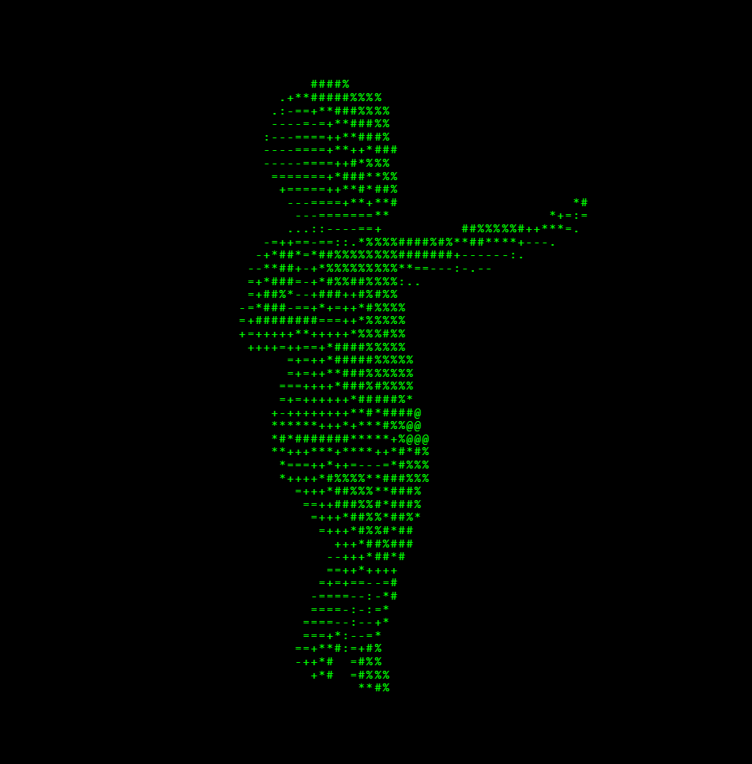

> Existir no meio virtual é realizar autopartos de cópias limitadas por um software.
> Existir no meio virtual é deixar registros fantasmagóricos de uma presença cooptada pela morte do futuro.
> Existir no meio virtual é significar alternâncias entre zeros e uns.
> Existir no meio virtual é permitir, de forma intencional ou não, o escape de lampejos da alma para a criação de uma persona única, viva até que o último servidor se desligue.
> Ou que seja apagada.
> Ou que mude o arquivo de extensão.
